Localized Policy - QoS
Task 2 QoS Policy
In this task, you will use Localized Policy to configure QoS classification, marking on the service side, and apply a QoS Map queueing policy on the WAN interface.
✅ QoS ACL – Classification
- Review the pre-configured QoS ACL used for traffic classification.
- The ACL classifies traffic based on DSCP values 46, 48, 41, 10, and 0 (no DSCP), distributing it into four classes.
a. In vManage, navigate to:
Configuration > Policies > Custom Options > Localized Policy > Access Control Lists
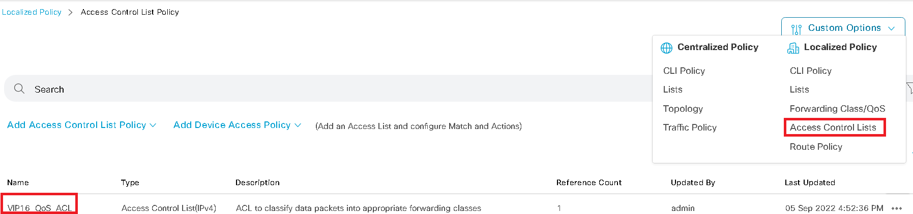
b. Open VIP16_QoS_ACL in view mode.
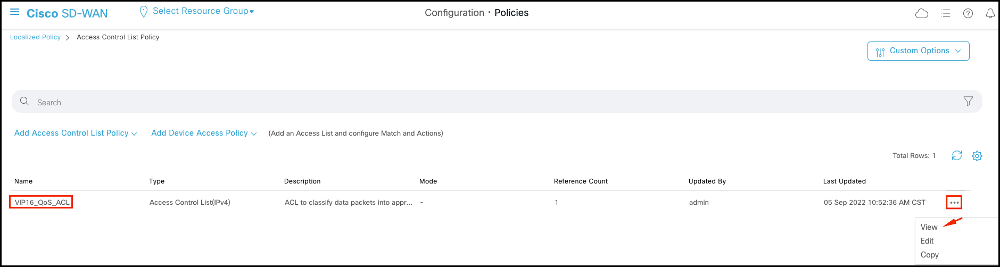
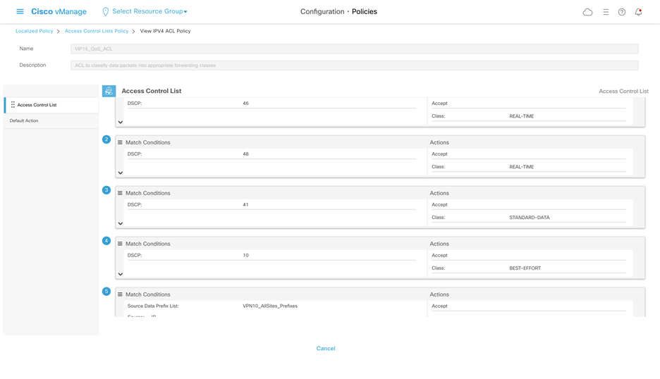
✅ QoS Map – Queuing Definition
- Review the QoS Map used to define queues.
- This QoS Map uses four queues: one LLQ (Low Latency Queue) and three WRR (Weighted Round Robin) queues.
a. In vManage, navigate to:
Configuration > Policies > Custom Options > Localized Policy > Forwarding Class / QoS
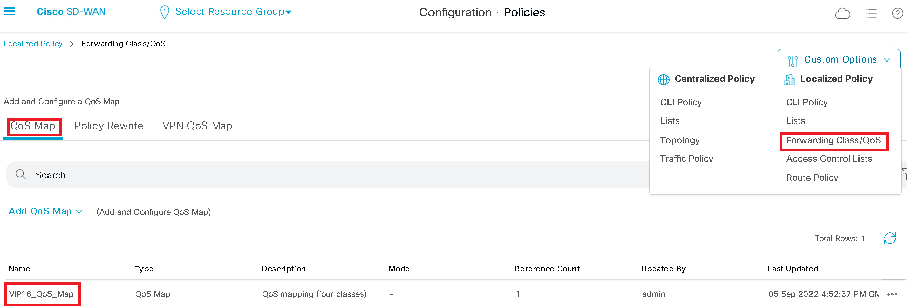
b. Open VIP16_QoS_Map in view mode.
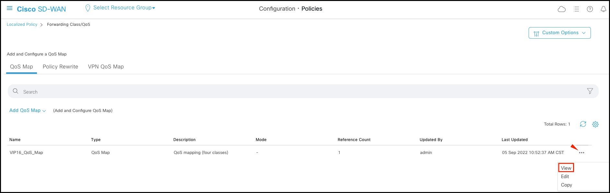
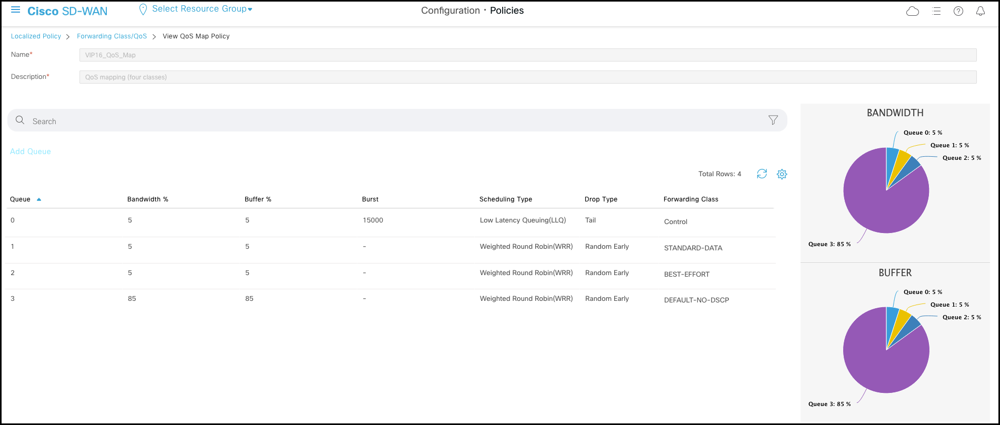
✅ Attach QoS ACL & QoS Map to Localized Policy
- Attach the QoS ACL and QoS Map to the existing Site300-Local-Policy-v1.
a. Navigate to:
Configuration > Policies > Localized Policy, and open Site300-Local-Policy-v1 in Edit mode
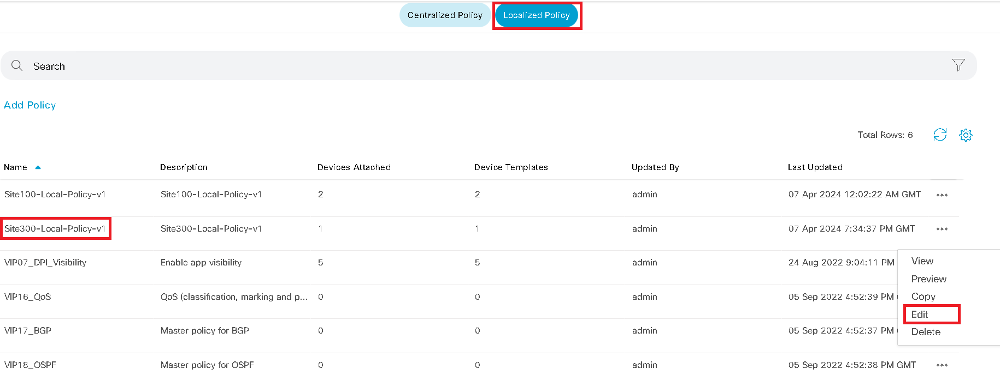
b. Import VIP16_QoS_Map
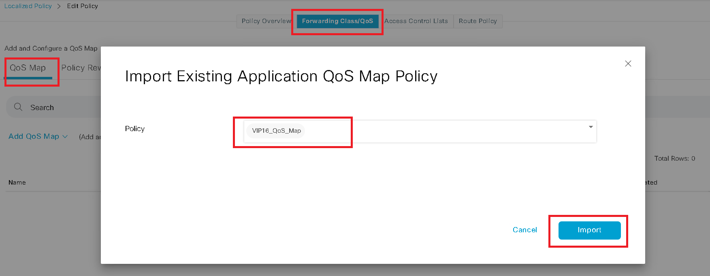
c. Import VIP16_QoS_ACL
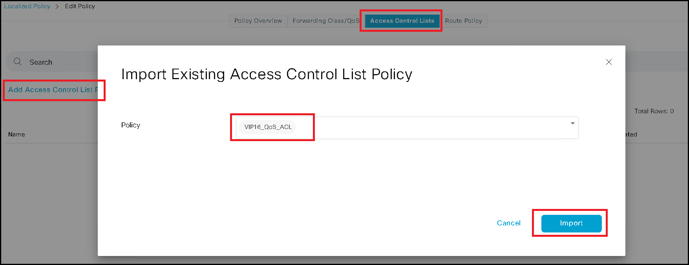
d. Save policy changes and push the configuration to Site300-cE1
💡 Note: Wait for the configuration to finish pushing before proceeding.
✅ Apply QoS ACL to LAN Interfaces
- Apply VIP16_QoS_ACL to the LAN-facing interface on Site300-cE1.
a. Navigate to:
Configuration > Templates > Feature Templates, search for Site300-cE1 and GigabitEthernet3
b. Open the interface Feature Template in Edit mode
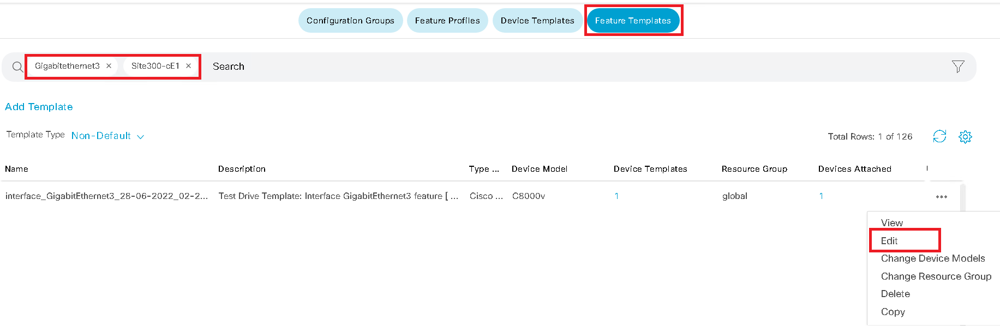
c. Scroll to ACL/QoS section and configure:
Ingress IPv4 ACL = VIP16_QoS_ACL
💡 Note: Make sure to enter the name exactly as shown
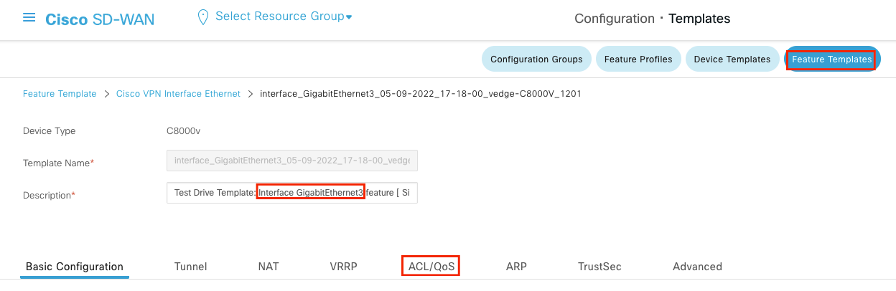
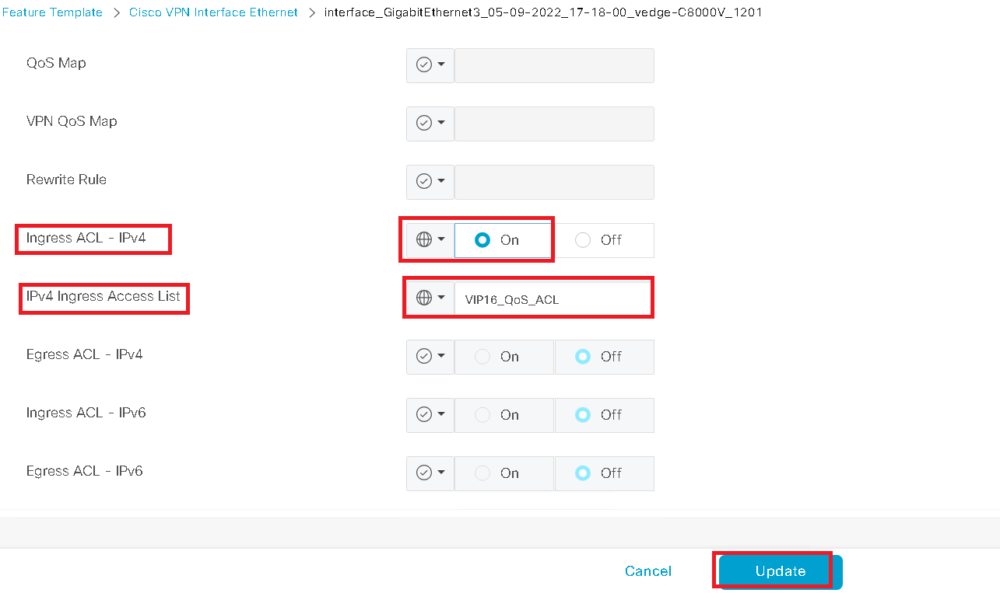
💡 Apply the template change to push configuration to Site300-cE1
✅ Apply QoS Map to WAN Interfaces
- Apply VIP16_QoS_Map to WAN interfaces of Site300-cE1.
a. Navigate to:
Configuration > Templates > Feature Templates, search for Site300-cE1 and GigabitEthernet2, then Edit it.
b. Scroll to ACL/QoS section and configure:
QoS Map = VIP16_QoS_Map
💡 Note: Make sure to enter the name exactly as shown
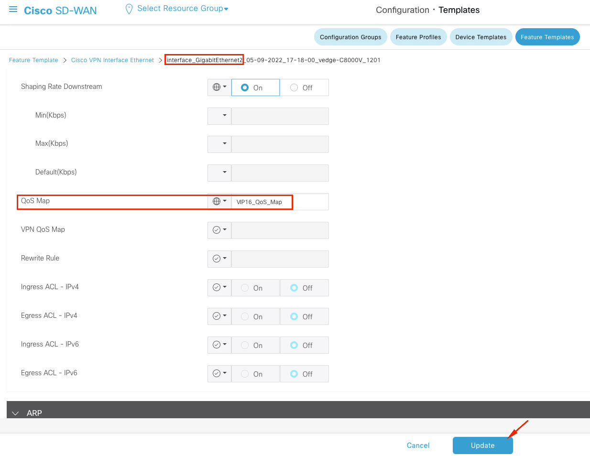
c. ✅ Repeat the same steps for GigabitEthernet1
✅ Generate Test Traffic
-
From Site300-Core-VPN10, initiate a ping test to generate traffic.
-
Monitor traffic assignment to each class in vManage:
-
Navigate to:
Monitor > Devices > Site300-cE1 > QoS - Select WAN Interface: GigabitEthernet1 or GigabitEthernet2
- Set graph to Real Time and optionally set rate to pps for clearer flow visibility.
💡 Note: Depending on the destination IP, either WAN interface might be used.
✅ Send Ping Packets with DSCP Marking
- From Site300-Core-VPN10, send 1000 packets with different DSCP markings to 10.10.1.100 (LAN side router at Site100):
# DSCP 48
ping 10.10.1.100 repeat 1000 dscp 48
# DSCP 41
ping 10.10.1.100 repeat 1000 dscp 41
# DSCP 10
ping 10.10.1.100 repeat 1000 dscp 10
# DSCP 0
ping 10.10.1.100 repeat 1000 dscp 0
✅ Class-to-Queue Mapping Reference
Queue 0 = LLQ = FC Control (REAL-TIME) = DSCP 46, 48
Queue 1 = WRR = FC STANDARD-DATA = DSCP 41
Queue 2 = WRR = FC BEST-EFFORT = DSCP 10
Queue 3 = WRR = FC DEFAULT-NO-DSCP = DSCP 0
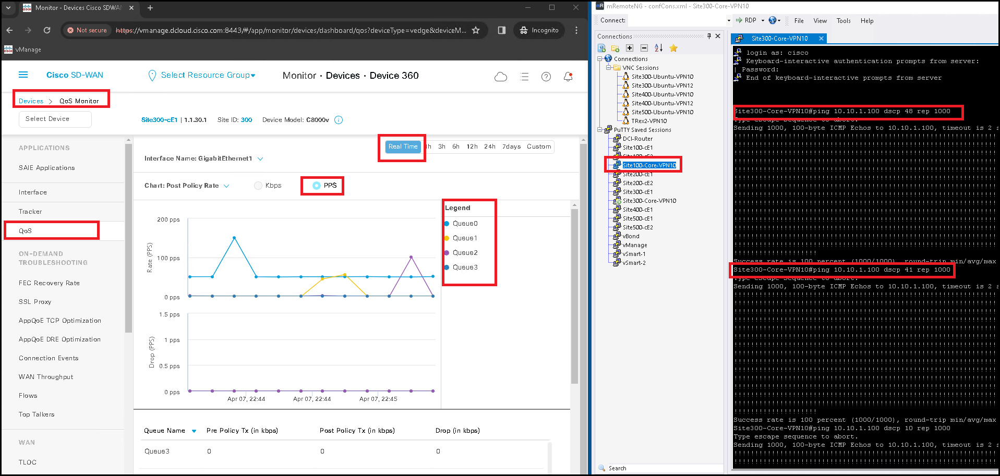